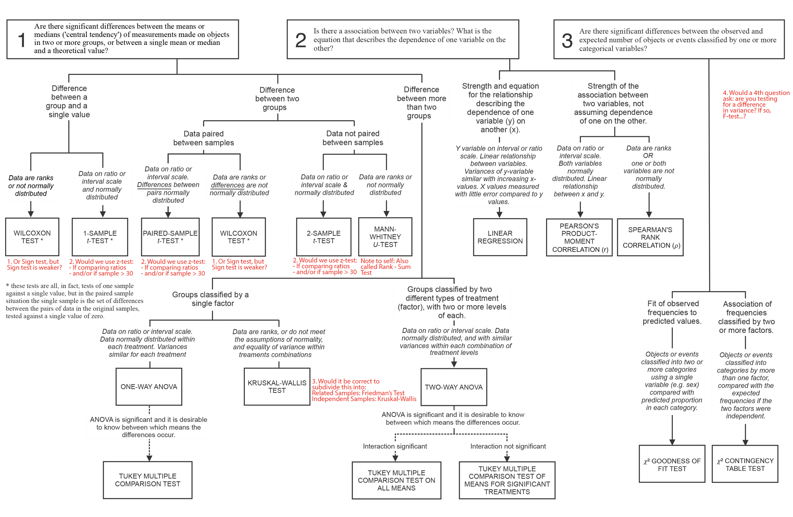

Intro
I completed a bachelor’s degree in statistics in 2019 and am nearing the end of a master’s degree in statistics this summer. Having now been a student of statistics in high school, university, and graduate school, this post is intended to clarify some of my thoughts about learning statistics. It could also be read as a letter of what I wish my first-year self could have known.
Importance of foundation in mathematics
Perhaps as a result of last decade’s data science revolution, it’s become more fashionable to position statistics as being somehow outside of, an alternative to, or even a replacement for traditional mathematics education. This Gladwell-ian contrarianism misleads students who don’t know better about the nature of both disciplines.
When I was a college freshman, this impression was reinforced by way my major was structured (my department has since reorganized). Multivariable calculus and linear algebra were optional elective courses and the even the introductory calculus sequence was only a pre-requisite for higher-level coursework. It wasn’t until I decided that I wanted to pursue a master’s degree and added a minor in mathematics that I realized how much I had been missing. I took a course that gave me a foundation in set theory, logic, and proofs. Having that introduction to analysis and the elective coursework in calculus and linear algebra made my statistics courses significantly more meaningful.
I wish I would have committed to my relationship with calculus earlier.
The consequences of positioning statistics as somehow outside mathematics are many. It’s no great surprise that when students are taught to memorize incomplete heuristics like “normality is when \(n\) is greater than 30” instead of being taught about the Central Limit Theorem from first principles, confident errors like the infamous one below find their way into mainstream discourse.
Being able to derive maximum likelihood estimates by hand did more to demystify practical statistics than any number of lm() or `` calls ever did or could have.
Critique of the ‘model zoo’
One consequence of learning statistics grounded in mathematics is that the discipline becomes significantly more unified. When I worked as a tutor for non-major students, I often helped students who seemed bewildered by what seemed to them an endless list of arbitrary rules and procedures. It’s not entirely their fault—I’ve heard this approach to statistics described as a “model zoo” for how a course or program might walk students through tidy code implementations of increasingly exotic-sounding procedures.

This presentation of statistics as a basket of formulas to memorize is overwhelming to introductory-level students and it fails to impart anything really useful. In retrospect,
- consider teaching everything using unified linear model-based approach
Value of clearer boundaries between statistics and its disciplinary siblings
People come to statistics from a wide variety of backgrounds.
- Soft edges between statistics and other disciplines which use statistics
- A clear view of what statistics is for, as part of statistical literacy (description, inference, prediction)
- Differences between econometrics and statistics
nhst misery: ubiquitous inability to define p-values